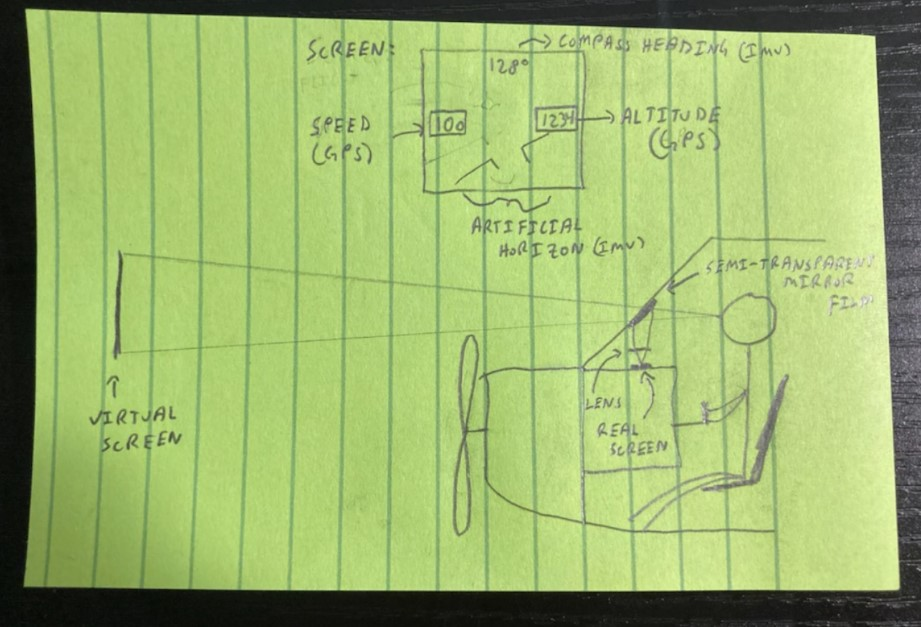

Project Idea
The idea of this project is to build an instrument that you can take up on an airplane and measure aircraft attitude and speed data to be displayed on a small screen on the top of the instrument panel. It would serve as a backup display to the aircraft’s primary flight instruments. This would be a simple, cheap solution for small general aviation aircraft which commonly do not have digital displays without expensive (tens of thousands of dollars) worth of upgrades. It will also log the data to be reviewed later, in case the pilot wants to view their GPS track or other parameters after the flight. The data would all be derived from our IMU unit (attitude and magnetic heading), plus using GPS for speed and altitude. The figure shows a simple diagram of how it works and what it would look like to the pilot.

Additionally, the data will be displayed by building a heads up display projector unit to display the data directly on the windshield, so the pilot does not even have to shift their glance to look at instruments. This technology is relatively new in civilian aviation so practically no small airplane has it and many large jets still do not have HUDs.
Instructions
How to use this instrument:

1. Go into a small aircraft.
2. Hook up to a computer for power.
3. Place on the hood of the aircraft in front of the pilot.
4. Turn on.
5. Fly and see the data populate!
Preliminary Design Review
You can view a video of our demo here: